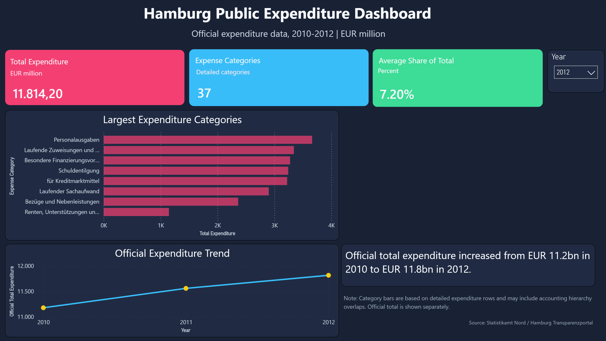

Interactive analytics projects built with Python, pandas, Streamlit, Power BI, Tableau, and visualization libraries.
Dashboard Portfolio
This section groups dashboard and business intelligence projects, including Streamlit applications, Power BI dashboards, Tableau dashboards, and future interactive analytics tools.
Each project focuses on turning data into clear visual insights through data cleaning, exploratory analysis, interactive charts, and user-friendly presentation.
Streamlit Dashboards
Global Internet Usage Dashboard

Interactive Streamlit dashboard for exploring worldwide internet usage patterns from 2000 to 2023. The project compares internet usage across continents and countries, highlights countries with high and low internet penetration, and explores relationships between internet usage and GDP per capita.
Tools: Python, pandas, Streamlit, Plotly, data cleaning, exploratory analysis, interactive visualization, dashboard communication, and GitHub project documentation.
Power BI Dashboards
Hamburg Public Expenditure Dashboard

Power BI dashboard analyzing official Hamburg public expenditure data from 2010 to 2012. The report combines executive KPI cards, category-level expenditure rankings, variance analysis, and category detail views to communicate public finance trends in a business-friendly format.
Tools: Power BI, Power Query, DAX, data cleaning, data modeling, KPI reporting, variance analysis, dashboard design, and GitHub project documentation.
Planned Dashboard Areas
Tableau Dashboards: Future projects focused on exploratory dashboards, storytelling with data, and visual analytics.